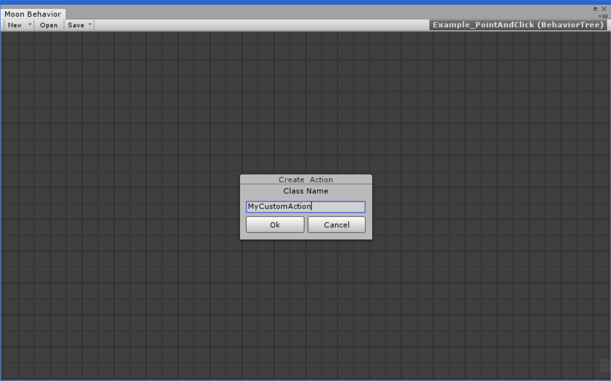

Custom Tasks allows you to put custom actions and logic , interacting with your game code and much more.
Creating a custom action
1- On en empty point on graph right click and over 'Create'

then select the type of node that you want to create.
2- Set the name and select the type, then hit 'Create'

3- Then your script editor should open the file
The files are default saved to: Assets/MoonBehavior/Actions/BehaviorTrees
Actions
Custom actions are functionality that the AI executes. ( eg: Move , Destroying , Animating..)
the default layout for a custom action are:
using System.Collections;
using System.Collections.Generic;
using UnityEngine;
using MoonBehavior.BehaviorTrees;
public class MyCustomAction : Task
{
public override TaskResult OnExecute(MoonAI ai)
{
return TaskResult.Success;
}
}
You must return an state (FAILURE , SUCCESS , RUNNING ) depending on what you are doing..
The custom Action Class must derived from Task.
Decisions
Decisions are actions that executes other actions as childs.
the default layout for decision are the similar as Actions but it has the Childs Property:
using System.Collections;
using System.Collections.Generic;
using UnityEngine;
using MoonBehavior.BehaviorTrees;
public class MyCustomDecision : Decision
{
// Called when the task is executed
public override TaskResult OnExecute(MoonAI ai)
{
for (int i = 0; i < Childs.Length; i++)
{
TaskResult result = Childs[i].Execute(ai);
if (result == TaskResult.Failure)
return result;
}
return TaskResult.Success;
}
}
The custom Decision class must derived from Decision.
SingleChildAttribute
Attribute used for limiting a decision to have only 1 child.
using System.Collections;
using System.Collections.Generic;
using UnityEngine;
using MoonBehavior.BehaviorTrees;
[SingleChild]
public class MyCustomDecision : Decision
{
// Called when the task is executed
public override TaskResult OnExecute(MoonAI ai)
{
if (Childs.Length > 0)
return Childs[0].Execute(ai);
return TaskResult.Success;
}
}
Adding extra info to your actions
You can add extra information to your action trought InfoAttribute.
You can override propertys:
Name Display node name
Category Node category
Description Node description in the inspector